Robotics researcher and Principal Investigator with 8 years developing intelligent robotic systems across medical, automotive, nuclear, and agricultural industries. Led end-to-end development from funding acquisition and concept design through hardware prototyping and real-world deployment. 30+ publications in top venues, 5 patents. PhD in Robotic Systems. Deputy Chair of IFToMM Robotics (Kaz).
Currently a Postdoc at Cornell University, Cornell Tech, AI and Robotics Lab, working on human-robot interaction for emergency medicine. Recently developed benchmark models for robot failure detection, and understanding of failure cause from users' facial reactions, modeling longitudinal user adaptation across repeated failures. Now developing new directions on autonomous navigation in safety-critical, crowded environments.
I am searching for new opportunities to grow. Please reach out at ai342@cornell.edu
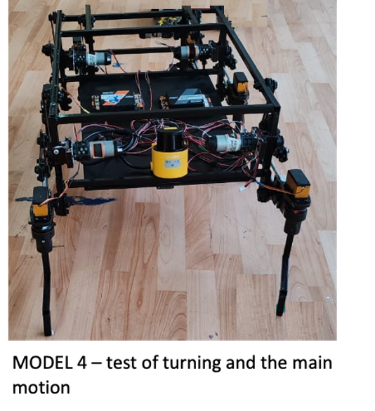
Development of deep-learning-based synthesis methods and optimization of an walking robot structural and metric parameters based on functional division of motors. 16 publications including a patent.
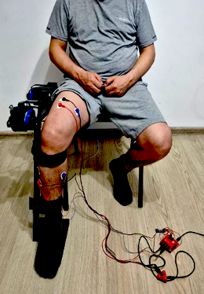
Multi-criteria optimized rehabilitation exoskeleton with real-time deep learning-based control utilizing biomechanical signals. 4 journal and conference papers.
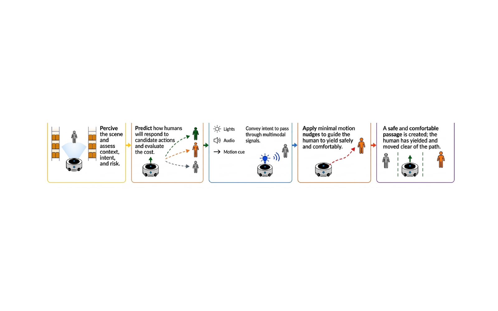
Autonomous navigation in dense human crowds by crossing through, not detouring or waiting. The robot treats surrounding people as optimizable variables, not independent obstacles, communicates intent through multimodal cues, and applies minimal nudges that open a passage. A vision-language model supplies open-vocabulary semantic context (surrounding hazards, attention, comfort) on a slow loop; a causal action-outcome predictor and receding-horizon controller execute in real time.
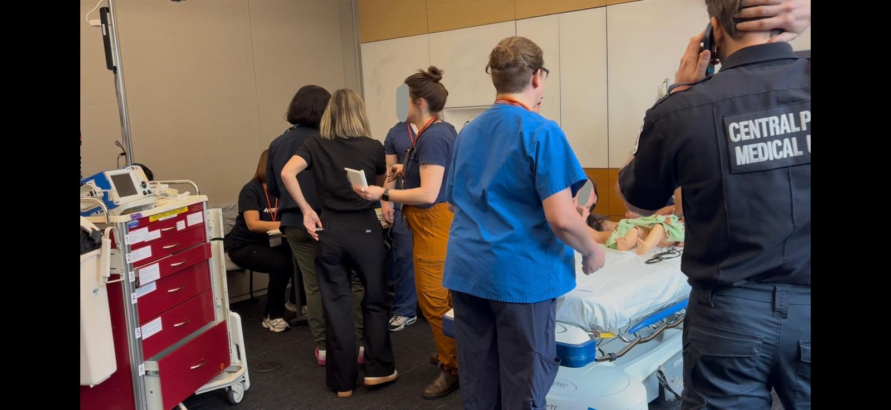
Benchmark models for robot failure detection and categorization from users' facial reactions in emergency department settings. History-aware architecture modeling longitudinal user adaptation. 2 papers under review.
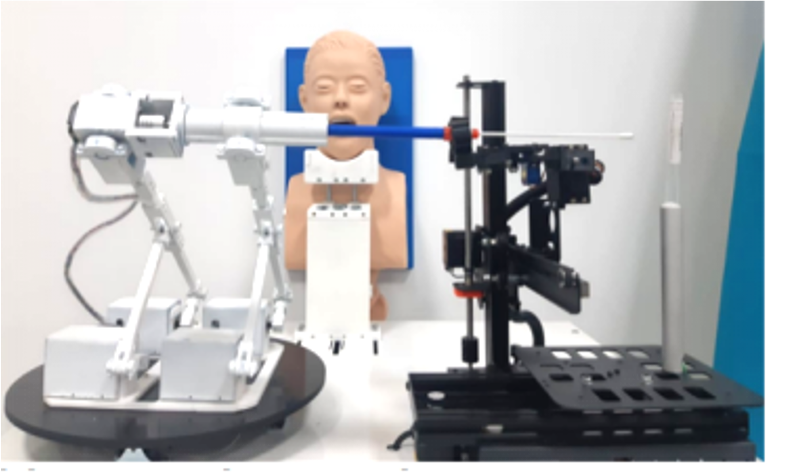
Robotic complex consisting of a saliva sampling parallel manipulator, patient care assistant, high-payload transporter, and autonomous disinfector. Patented technology.
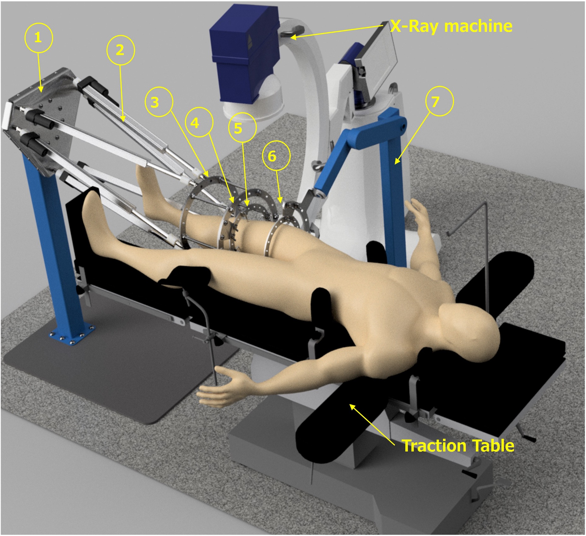
R.ALFRED: parallel-structure robot utilizing 2D X-ray imaging to reconstruct 3D bone models for trajectory planning. Identifies corresponding points on fractured segments and computes optimal surgical trajectories.
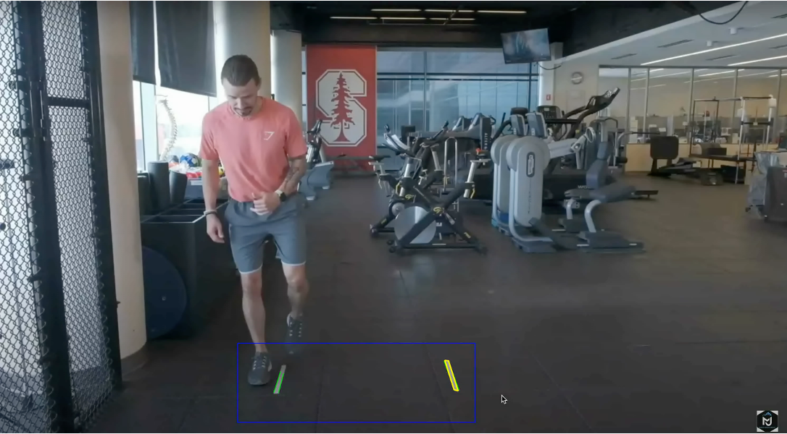
ML/CV musculoskeletal analysis systems for clinical diagnosis from low-quality phone video. Post-injury functional tests and AI-based rehabilitation analysis. 500+ engineered features, 97% accuracy.
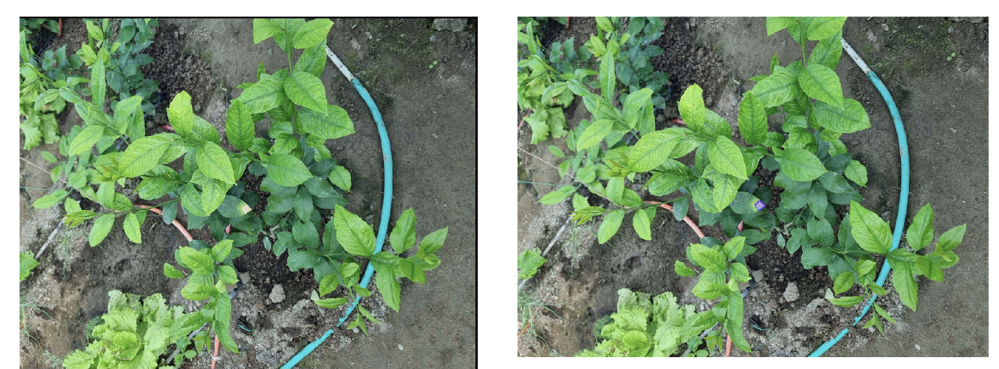
Secured $200K in funding to develop an autonomous field robot with multi-modal perception and deep RL for real-time plant disease detection and localization in greenhouse environments.
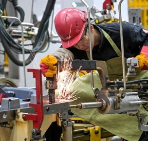
Development of five robotic complexes for industrial applications: metal part marking with VIN codes, welding automation (spot, laser, protective gas), and three mobile robotic platforms. Manuscript authored.
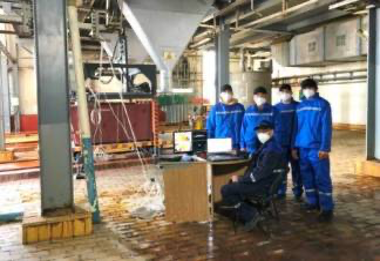
Robotic complex (RTK-TUK-118) performing the entire cycle of operations from removing and closing the lid, evenly filling HCPU, taking samples, to closing the lid. Replacing manual labor and minimizing radiation exposure.
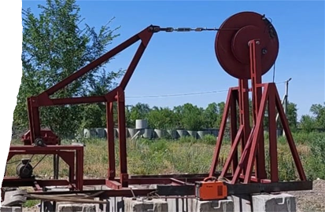
Novel design eliminating the massive horse-head balancer, reducing foundation requirements, and improving force transmission. Co-authored 2 patents and 1 journal article.
Long-form interview on the move to Cornell, the realities of AI and robotics research, and challenging stereotypes about an academic career path.
Feature on child-inspired curriculum learning in robotics and what it means to develop AI systems that mature gradually rather than arrive fully formed.
Conversation on empathy, trust, and the human factors that determine whether robots succeed in clinical and emergency-care environments.
Profile of cross-disciplinary work spanning rehabilitation exoskeletons, surgical robots, and human-aware navigation in shared environments.
Federal science media coverage of collaborative research on piezoelectric thin-film sensors for aviation manufacturing, with new processing methods cutting unit production cost approximately fivefold.
Coverage of bilateral aerospace and space-research collaboration between scientists in Russia and Kazakhstan, February 2025.